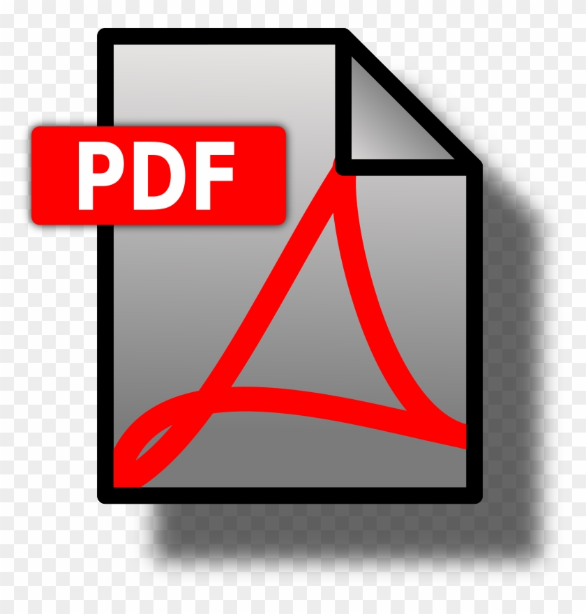

Email: firstname-lastname@uiowa.edu
I am a fourth year PhD student at The University of Iowa advised by Dr. Rishab Nithayanand. As part of the SPARTA Lab, I work on better understanding next-generation networking technologies, specifically IPv6 and Starlink. and internet censorship. I am currently an Information Controls Fellow with the Censored Planet Lab at The University of Michigan advised by Dr. Roya Ensafi.
Hammas Bin Tanveer, Rachee Singh, Paul Pearce, Rishab Nithyanand
USENIX Security '23  PDF
Jack Wampler, Hammas Bin Tanveer, Rishab Nithyanand, Eric Wustrow
FOCI '23 (Under Submission) PDF
Programming Language Concepts (JavaScript and Haskell)
Starlink is an internet service which uses Lower-Earth Orbit Satellites to provide low-latency internet access to users around the world. In this work, we develop a de-anonymization attack on Tor and VPN users over Starlink.
Censorship circumvention tools like Tor now operate over both IPv4 and IPv6, keeping in line with the recent rise in adoption of IPv6. However, little is known about how censor states are adapting to the rise. In this work, we analyze the efficacy of the Great Firewall of China in blocking Tor bridges over IPv4 and IPv6.
A project aimed at analyzing the efficacy of Threat Intelligence in the wake of IPv6. We measure the variance of the utility of Threat Intelligence when applied to IPv4 and IPv6. We aim to propose metrics to improve the efficacy of Cyber Threat Intelligence by leveraging insights into how malicious actors function differently in IPv4 and IPv6.